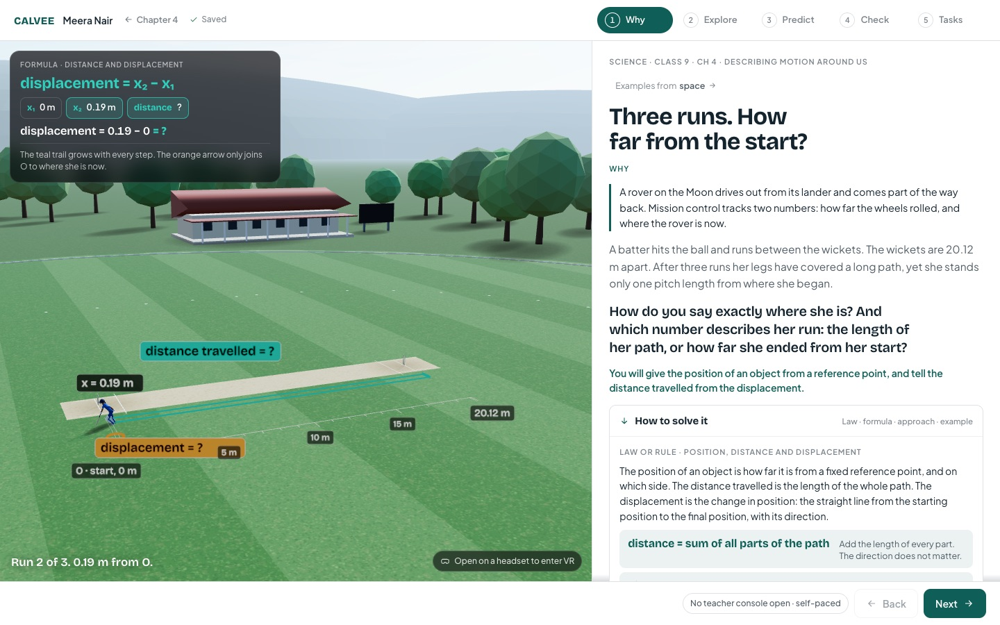
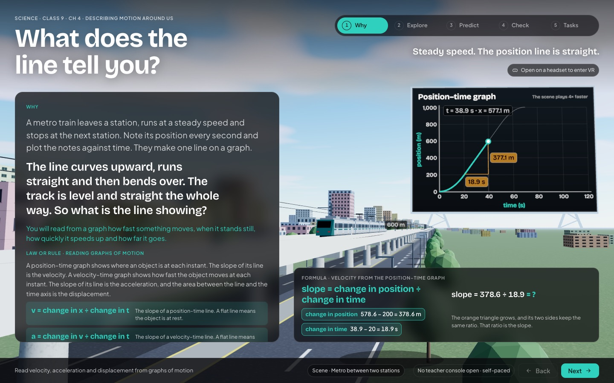
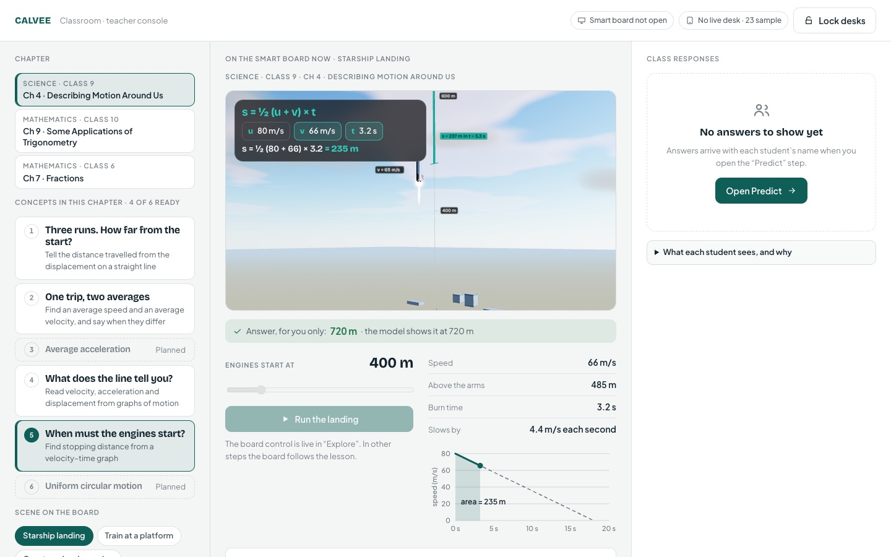

O
OmarGrade 9 · example student
- Interest
- Loves cricket
- Last answer
- Wrong last time, and sure
CALVEE gives
Running between the wickets
Every step worked, one at a time
Adaptive learning AI model · Education
CALVEE builds each chapter for the student who reads it, from the first school year to university. The teacher leads. Every student follows a path of their own through the same syllabus.

One concept, three students
Three example students meet the same idea, the equations of motion. CALVEE reads each one and builds a different lesson.
CALVEE gives
Every step worked, one at a time
CALVEE gives
A graph that draws itself as the train moves
CALVEE gives
A harder problem, less help
Live lessons
These scenes run in the browser, the same way they run on the student desk. Pick one and press play.

Car at a school crossing. Set the speed and run it. At double the speed the car needs four times the road.
How it works
Grade 9 Science · Chapter 4
Four of the chapter’s six concepts are live today, each with its own lesson, six kinds of task and more than one scene.
Section 4.1.1 – 4.1.2
Section 4.1.3
Section 4.1.4
Section 4.2
Section 4.3
Section 4.4
In the classroom
The teacher leads from a console. The class watches one smart board. Every student works on a screen at the desk.


Capabilities
CALVEE starts from what the student does well and adds practice where the student needs help.
Motion can be a cricket run, a train at a platform or a car at a school gate. CALVEE picks the one that means most to the student.
Every concept has 3D scenes the student can change and run, with the formula filling in as the scene plays.
A wrong and sure answer brings more worked steps. A right and sure one brings less help and a fresh problem.
Every module stays aligned to the board or university curriculum. CALVEE changes how a topic is taught, not what must be learnt.
The teacher console shows each student’s answers, which version each student sees, and why.
Use cases
Schools
Schools on national or international curricula give each student a version of the class chapter that fits them. The syllabus and the exams stay the same.
Higher education
Course modules for undergraduate and postgraduate students, with each topic linked to the tools and jobs it leads to.
Teachers
See how each student did on each module, who needs help and who is ready to move ahead.
Home
Use CALVEE with the child on the same chapters the child learns in school.
Subjects
Arts and literature, life skills, and science and technology.
Platforms
Ed-tech platforms can bring CALVEE’s chapters and scenes to the students they already serve.
Responsible use
CALVEE never replaces the teacher. The teacher leads the class and sees how each student is doing.
Every module stays aligned to the board or university curriculum, so what a student must learn does not change.
The teacher sees names. The shared smart board shows counts and answers, never who gave them.
Questions
No. CALVEE gives each student a chapter that fits them. The teacher still leads the class.
From class 1 to higher education: school classes 1 to 12, and undergraduate and postgraduate courses.
Yes. Every module stays aligned to your curriculum: a national curriculum, an international programme or your university’s own courses.
It looks at the student’s strengths, interests, pace and reading, and at how each answer went.
Yes. Open the live classroom on this site. Four lessons of Grade 9 Science, Chapter 4 are running.
Yes. Parents can use CALVEE with their child on the same chapters the child learns in school.